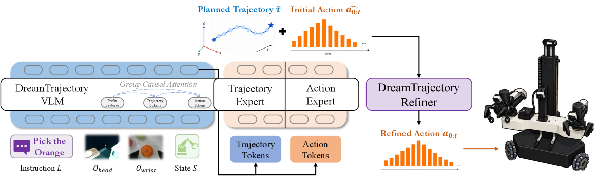
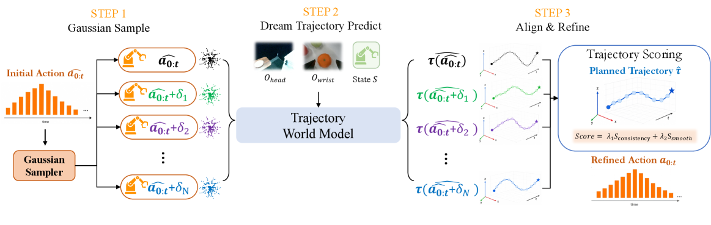
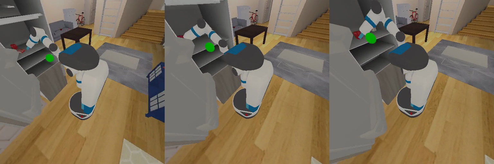
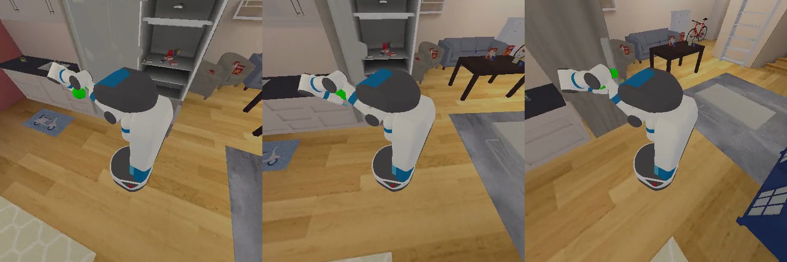
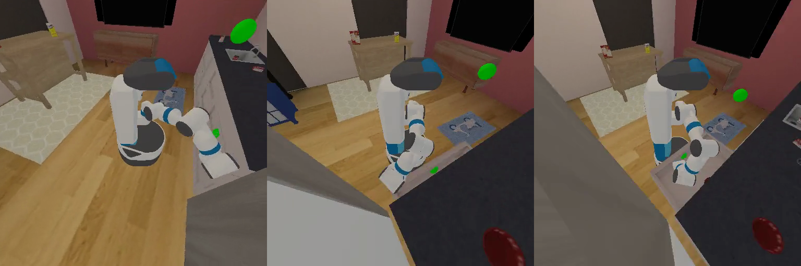
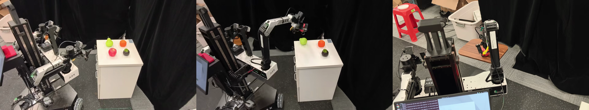
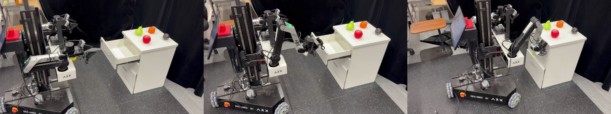
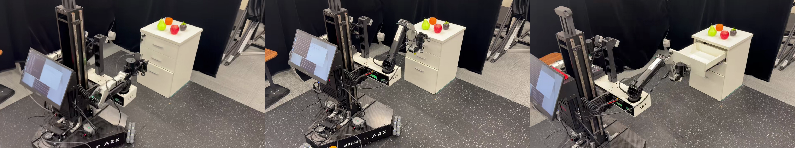

Explicit Trajectory Guidance
A compact 7D end-effector trajectory provides a task-space reference for coordinated base-arm action generation.
Trajectory-Guided Action Generation with World Model Alignment
for Mobile Manipulation
DreamTrajectory overview and representative rollouts.

Mobile manipulation requires coordinated base-arm control under continuously changing viewpoints and contact conditions. Direct whole-body action prediction searches a large action space without an explicit task-space motion plan, while open-loop execution cannot verify whether the predicted actions will realize the intended motion.
DreamTrajectory addresses both limitations. A trajectory-guided VLA jointly predicts an intention-level end-effector trajectory and a whole-body action chunk. A lightweight trajectory world model then predicts the motion induced by candidate actions and selects the candidate best aligned with the plan.
On MS-HAB, trajectory guidance raises average success from 32.3% to 47.5%, and test-time refinement further improves it to 54.8%. On three real-world tasks, average success rises from 63.3% to 81.7% and finally to 90.0%.
A compact 7D end-effector trajectory provides a task-space reference for coordinated base-arm action generation.
Trajectory tokens guide action denoising while the asymmetric attention mask prevents reverse information leakage.
A lightweight action-conditioned model predicts the physical trajectory induced by each candidate action chunk.
Candidate actions are sampled, predicted in parallel, scored for plan alignment and smoothness, then refined before execution.
One task-space representation connects action generation and consequence prediction.
The policy receives a language instruction, head-camera image, wrist-camera image, and proprioceptive state.
A dual-stream action expert synchronously denoises a planned 7D trajectory and a whole-body action chunk.
The trajectory world model estimates the execution trajectory induced by each sampled action candidate.
DreamTrajectory executes the action whose predicted trajectory best matches the plan while remaining smooth.
The refiner preserves the original action, samples smooth perturbations, predicts each candidate's induced trajectory in parallel, and selects the candidate that balances trajectory consistency and action smoothness.

Trajectory guidance improves action generation; refinement corrects residual plan-execution mismatch.
Largest gains appear on contact-rich articulated-object tasks such as opening and closing refrigerators and counters.
The complete system reaches 80% on fruit pick-and-place, 90% on drawer opening, and 100% on drawer closing.
| Method | Pick Apple | Pick Bowl | Open Fridge | Close Fridge | Open Counter | Close Counter | Avg. |
|---|---|---|---|---|---|---|---|
| ACT | 1.0 | 0.0 | 28.0 | 24.0 | 22.0 | 93.0 | 28.0 |
| Diffusion Policy | 19.0 | 22.0 | 19.0 | 61.0 | 17.0 | 28.0 | 27.7 |
| RDT-1B | 0.0 | 0.0 | 5.0 | 14.0 | 0.0 | 33.0 | 8.7 |
| GR00T N1 | 3.0 | 1.0 | 43.0 | 16.0 | 5.0 | 59.0 | 21.2 |
| π0.5 | 37.0 | 19.0 | 5.0 | 8.0 | 87.0 | 38.0 | 32.3 |
| DreamTrajectory | 39.0 | 35.0 | 51.0 | 33.0 | 91.0 | 80.0 | 54.8 |
Every task requires concurrent base and arm motion.






Simulation and real-world rollouts are synchronized in a clean, muted, looping presentation.
Pick the instructed fruit and place it at the target location.
MS-HAB rollout
ARX LIFT rollout
Coordinate base repositioning and arm motion to pull the drawer open.
MS-HAB rollout
ARX LIFT rollout
Maintain contact while coordinating the mobile base and manipulator.
MS-HAB rollout
ARX LIFT rollout
@article{yang2026dreamtrajectory,
title={DreamTrajectory: Trajectory-Guided Action Generation with World Model Alignment for Mobile Manipulation},
author={Yang, Zheng and Zhang, Wenjie and Chen, Xiangyu and Song, Wenxuan and Wang, Xianpeng and Kang, Yihang and Chen, Wen and Wang, Lujia and Xu, Renjing and Chu, Xiaowen},
journal={arXiv preprint arXiv:2608.01381},
year={2026}
}